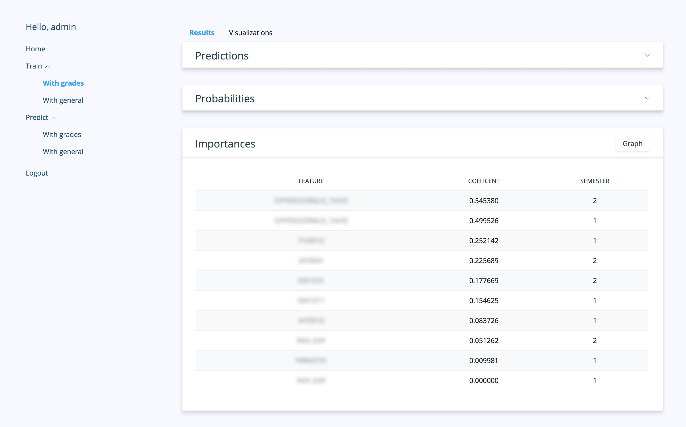
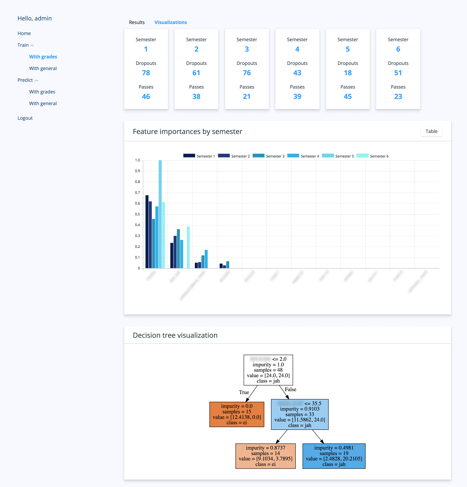

Back
Back
Developed as a Bachelor's thesis in Tallinn University of Technology, a web application was created that interfaced with the underlying machine learning algorithms, predicting student dropout. Data visualization techniques were used to offer both an overview and specific details on the prediction results.
Python back-end with Scikit-learn and Tensorflow, front-end with HTML5/CSS3/JS.
With dropout rates being a problem in most universities, a system was needed that could identify students at risk of discontinuing their education. This system used all the available information on students' grades, demographic information and course completion. Utilizing several algorithms, a predictor model was developed, that offered both a binary representation of dropout risk and risk factors in form of variable importances. The best-performing models reached accuracy and recall values above 90%.
A second focus in this thesis was on visualizing the prediction results. A granular results view for each student was designed, that presents risk percentages and a binary decision from the algorithms. A dashboard with overview of the prediction results was also developed, to offer important information at a glance. The dashboard focused on offering an explanation for the results, showing feature importances and correlation between the most important variables and probabilities of dropout.

Overall, the goal was to offer a tool to identify students at risk of dropping out. This information is useful for administrative personnel and departments, to provide support to students and to combat high rates of dropout.
Development of this system is continuing with a refactor of the back-end to facilitate extensibility and a separate notification system for the at-risk students themselves.